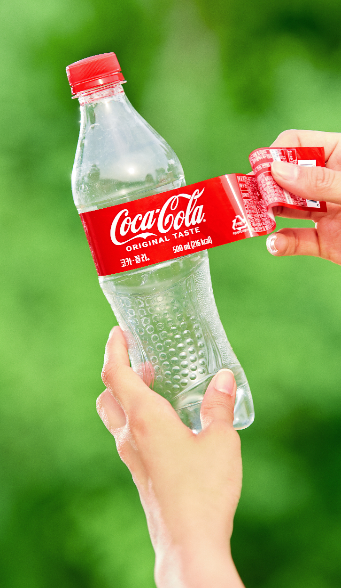
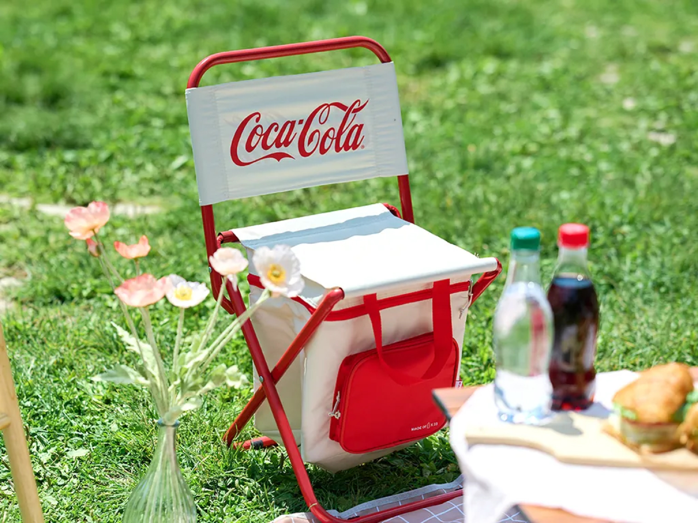

managpent philosophy
history
sustainable business
코카-콜라가 물을 되돌려주는 방식
코카-콜라는 글로벌 종합음료회사로서 지난 2007년부터 제품 생산에 사용된 물을 사회와 지구에 환원하는 ‘물 환원 프로젝트’를 시작했다.
코카-콜라가 전 세계에서 생산하는 모든 제품과 제조 과정에서 사용한 물의 총량을 각 지역사회의 필요에 맞게 다양한 방법으로 자연에 환원하는 것이 프로젝트의 주요 목적이다.
더 알아보기-
코카-콜라가 물을 되돌려주는 방식
코카-콜라는 글로벌 종합음료회사로서 지난 2007년부터 제품 생산에 사용된 물을 사회와 지구에 환원하는 ‘물 환원 프로젝트’를 시작했다.
코카-콜라가 전 세계에서 생산하는 모든 제품과 제조 과정에서 사용한 물의 총량을 각 지역사회의 필요에 맞게 다양한 방법으로 자연에 환원하는 것이 프로젝트의 주요 목적이다.
더 알아보기 -
 3분 순삭! 한 눈에 보는 원더플 캠페인원더플 캠페인은 숫자 ‘3’과 인연이 많다. 총 3,000명의 원더플 피플이 모여 3개월 동안 진행된 3번의 사이클.
그래서 준비해봤다. 3분 안에 보는 원더플 캠페인! 플라스틱을 수거하고 굿즈로 탄생하기까지의 과정, 그리고 캠페인에 참여한 원더플 피플의 솔직한 의견까지 더했다.
더 알아보기 -
 우리 페트병이 달라졌어요! 원더플한 굿즈 성장기음료의 인생은 마시고 난 후 새로 시작된다. 잘 분리배출된 투명한 페트병은 다시 한번 새로운 물건으로 만들어지는 기회가 오기 때문이다.
‘한번(ONE) 더(THE) 사용되는 플라스틱(PL)’이라는 뜻을 가진 ‘원더플(ONETHEPL)’ 캠페인이 마시즘에게 알려준 교훈이다.
더 알아보기 -
 코카-콜라는 왜 마시는 것만큼, 재활용이 중요하다 말했나?
코카-콜라는 왜 마시는 것만큼, 재활용이 중요하다 말했나?이 대담한(?) 문구를 쓴 주인공은 다름 아닌 코카-콜라다. 2019년 벨기에 코카-콜라에서 전국적으로 진행된 캠페인이다. 코카-콜라를 즐겨주는 팬들에게 사용한 용기 수거에 대한 솔직한 제안인 것이다.
문구를 다시 보니 이렇게 말하는 것처럼 느껴졌다. "우리는 환경을 위해 페트병을 최대한 재활용할 생각이야. 그러니 여러분도 마신 코카-콜라를 분리배출해 줄래요?"
더 알아보기